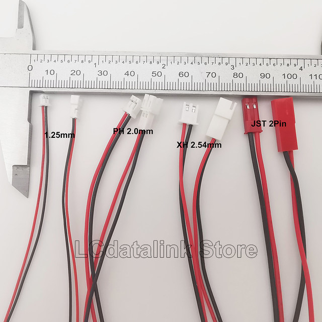
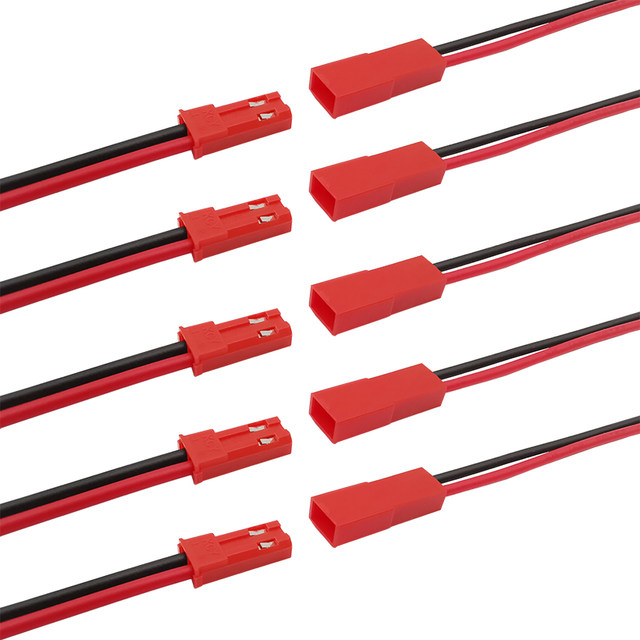
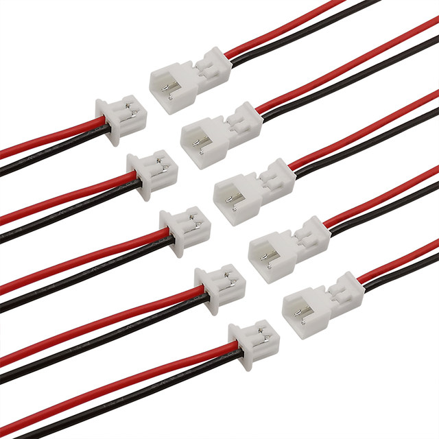
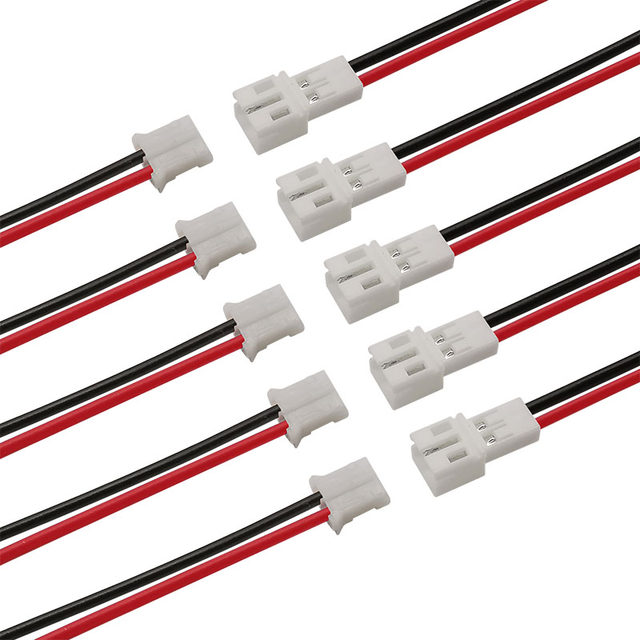
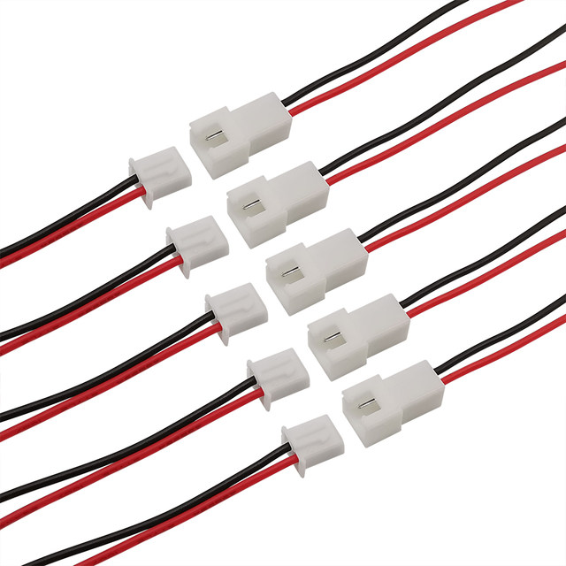

10/5/2 Pairs JST 1.25mm PH2.0 XH2.54 2 Pin Male Female Plug Jack Connector Cable Small Mini JST 1.25/2.0/2.54 2P Electronic Wire
Product Describle:
Name: JST 1.25mm/PH 2.0mm/XH 2.54mm 2 Pin Male Female Plug Connector Cable
Material: Metal, Plastic
Gender: Male Female
Type: JST Connector 2Pin
Pins: 2Pin
Pitch: 1.25mm, 2.0mm, 2.54mm
Length: 15cm, 20cm.
Connector1: JST 1.25MM Male Plug + Female Socket Connector Cable 15CM 28AWG Wires
Connector2: JST PH 2.0MM Male Plug + Female Socket Connector Cable 20CM 26AWG Wires
Connector3: JST XH 2.54MM Male Plug + Female Socket Connector Cable 20CM 26AWG Wires
Connector4: JST 2Pin Male Plug + Female Socket Cable Connector 20CM 22AWG Wires
Quantity: 2/5/10Pairs
Note:
1. Please allow ±0-3mm difference due to manual measurement.(1 inch=2.54cm)
2. The flaws of the product in the picture are caused by reflections during shooting, the picture may not reflect the actual color of the item, subject to the actual product.
Please make sure you do not mind before you bid. Thank you!




